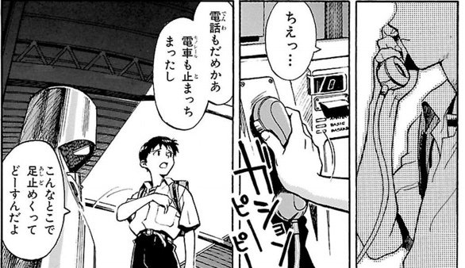

|
今年も早いものでもう下半期に入ってしまいました。 今年の上半期もたくさんの良い作品に出会えた気がします。特に、アニメ映画が豊作だった気がします。(シン・エヴァンゲリオン劇場版:||についてはここで書くとその部分だけとても長くなってしまうので別の機会に書きたいと思います) というわけで早速レビューに入りたいと思います。内容は全て個人的なものなのでご了承ください🙏 |
| 1月 |
ドメスティックな彼女 新世紀エヴァンゲリオン 弱キャラ友崎くん |
| 2月 |
五等分の花嫁∬ 岸部露伴は動かない |
| 3月 |
ドラゴンクエスト ユア・ストーリー 新世紀エヴァンゲリオン劇場版 Air/まごころを、君に この世界の片隅に 生徒会役員共* 番外編 / 劇場版 生徒会役員共 この素晴らしい世界に祝福を！紅伝説 涼宮ハルヒの憂鬱 / 涼宮ハルヒの消失 転生したらスライムだった件 第2期 パプリカ |
あらすじ
高校生・夏生は明るくて人気者の教師・陽菜にかなわぬ恋をしていた。だが、合コンで出会った陰のある少女・瑠衣と関係をもってしまう。そんなとき、父が再婚することに。相手が連れてきた子供が、なんと陽菜と瑠衣で！？ カゲキな新生活が今、始まる！
評価
★★★★★★★★ (8/10)
感想
このアニメ、本当に「こうなってほしくはないなー」って思うことがほぼ確実に現実のものとなります。
例えば、ドア開けっぱなしで主人公とある女性がキスをしていて「ここで他の人が目撃したらまずいことになるんだろうなあ」と思う矢先に本当に目撃されたりします。 こういうことがかなりのペースで起こるので、見るのにかなりのカロリーを要します。正直見ていて結構疲れます。
内容自体はかなりドロドロしていますが面白いです。恋愛アニメとしてもかなり見ごたえがあると思いますが、やはり見ていて疲れます。 アニメの続きは今まで以上に壮絶な展開が続くと聞いて怖気づいてしまっていまだに原作を買っていません。
あらすじ
物語の舞台は西暦2000年9月13日に起きた大災害セカンドインパクトによって世界人口の半数が失われた世界。その15年後の西暦2015年、主人公である14歳の少年碇シンジは、別居していた父、国連直属の非公開組織・特務機関NERV（ネルフ）の総司令である碇ゲンドウから突然第3新東京市に呼び出され、巨大な汎用人型決戦兵器エヴァンゲリオン（EVA）初号機のパイロットとなって第3新東京市に襲来する謎の敵「使徒」と戦うことを命じられる。
評価
できないです
感想
この時はシンエヴァの公開日が1/23の予定だったのでそれに向けて見直していました。
エヴァに関してはもう見すぎて最早言うことは無いのですが、TV番のシンジ君は意外と口数が多くて余計な一言を言ってしまうことが多くて面白いです。ちなみに漫画版のシンジ君はもっと口数が多くて結構生意気です。
TV番の面白い所としては、制作当時時間が無さ過ぎてだんだん作画枚数の少ない精神描写が多くなったり、次回予告がだんだん動かなくなっていって最終的に台本をそのまま写したり...と切羽詰まってる感じが如実に現れていていく所ですね。
後半は鬱展開になっていくのですが、前半部分は笑えるシーンもそこそこあります。個人的にはアスカがどんどん自信をなくしていって最終的にエヴァとシンクロすらできなくなるのが見ていて辛かったです。
シンエヴァを見るにあたって「TV版を見ないとダメ」と言っている人を見ますが、個人的にはそんなことはないかなと思っています。
勿論TV版を見たほうがより深く面白味が分かると思いますが、劇場版シリーズで1つの作品として完結していますし、劇場版前半部分の第3村なんかはTV版との関連性も低いので(勿論、セリフ等TV版を意図的にオマージュしている所もありますが)、そこまでTV版を見ることはマストではないと思います。
シンエヴァを見終わった後にTV版をみて「ここシンエヴァと同じじゃん!」と気づくのでもいいと思いますしね。
そろそろ長くなってきたので次に行きます。
あらすじ
友崎文也は弱キャラである。陰キャで彼女はおろか友達もいない。そんな友崎のもう一つの名は「ｎａｎａｓｈｉ」。大人気ゲーム「アタファミ」でのハンドルネームで、日本最高のプレイヤーとして賞賛されていた。リア充でクラスの中心人物、中村修二も、アタファミに関してだけは友崎に遠く及ばない。そんなある日、友崎はネット上で「ＮＯＮＡＭＥ」というプレイヤーに挑まれる。ｎａｎａｓｈｉ相手に善戦するＮＯＮＡＭＥ。ライバルの登場に心躍らせる友崎だが、「オフ会しませんか？」というＮＯＮＡＭＥからのメッセージに困惑する。
評価
★★★★ (4/10)
感想
自分には合っていなかったです。
このアニメは、端的に言うとゲーム好きの自分のことをクソ雑魚だと思っている主人公がなんやかんやでヒロインと仲良くなりつつ成長していく...みたいな感じのよくあるっちゃよくある展開なのですが、僕はまじで登場人物が好きになれませんでした。
特に、主人公とヒロインの性格が無理でした。また、他のキャラもあまり好きになれるキャラが数少なく、展開も無理があるものが多かった気がします(いやそこで笑いは起こらんやろ...みたいな所がちょくちょくあった気がします)。
僕はヒロインの性格がいつまで経っても好きになれませんでした。こういう系のアニメは紆余曲折ありながらなんやかんやヒロインとイチャコラするのが醍醐味みたいな所があると思うので、その肝心のヒロインが好きになれないため本当に見る気が起こらなかったです。
具体的にヒロインのどこら辺が好きになれなかったかについて説明します。まず、言動/行動がKISHOIです。 話に困らないように話題を列挙したメモを常備したり、話し方を訓練するためにボイスレコーダーで自分の声を録音したり...と、ちょっと怖いです。会話が途切れたら自爆する装置でも体に埋め込まれてるんですかね。
まあこれだけならただキショイねでいいんですが、その頭のおかしい持論を用いて主人公に説教しだします。
さらに「今日の課題」と称して自分のアタオカ会話訓練法()を主人公にもやらせます。それに最初は従う主人公ですが、途中から自分のやり方でやってみたいと言います。 するとヒロインは主人公に失望し、自分があげたプレゼントを返せと言い出します。分かれた瞬間交際費を請求してくるクズ人間とやっていることが変わりませんね。
勿論このアニメにも良かったところはあります。準ヒロインは割とマトモな人が多いです。アニメ後半の生徒会選挙の話なんかはヒロインの出番も少なく面白かったです。
あらすじ
波乱の林間学校が終わったのも束の間、ひき始めの風邪が悪化し、入院することになった風太郎。林間学校での様々なイベントを通し、距離が近づいた五つ子は、風太郎のお見舞いにやってきた。そこで、五月から何故勉強をするのかその理由を聞かれた風太郎は、5年前に京都で出会ったある女の子の話をすることに。
評価
★★★★★★★★ (8/10)
感想
2期は林間学校後から修学旅行まででした。1期もそうだったんですが、五等分の花嫁はヒロインが全員姉妹なので、それぞれのヒロイン同士の友情が深めに書かれていて良かったです。
修学旅行前くらいから一花がマジモンのクズになってしまうのもよかったです。ヒロイン候補があそこまでクズになるラブコメも珍しいのかなと思います。
ただ1つ残念なのが、漫画はとても作画が綺麗なのですが、アニメになると動きを付けなければいけない都合上普通の作画になってしまっている所ですかね。ただこれは仕方ないのかなと思います。
あらすじ
「岸辺露伴は動かない」は、リアリティーを何よりも重んじる、少し風変わりな漫画家・岸辺露伴が取材先で遭遇する奇妙なできごとの数々を、ホラータッチで描く作品。高橋ふんする岸辺露伴が、相棒となる女性編集者・泉京香と共に、人知を超えた事件や事象に挑む。
評価
★★★★★★★★★ (9/10)
いい意味でジョジョ本編と雰囲気が違っていてよかったです。
僕は懺悔室が1番好きでした。最後のどんでん返しは最後まで気づかなくてびっくりしました。
六壁坂は普通にかなりグロくて驚きました。どの話もジョジョ本編にはない奇妙さがあって新鮮でした。
ドラマ版の方もとてもよかったです。特に、無理に見た目などをアニメに近づけすぎないのに雰囲気はアニメに近くてクオリティが高かったと思います。
あらすじ
少年リュカは父パパスと旅を続けていた。 その目的は、ゲマ率いる魔物たちに連れ去られた母を取り戻すこと。 旅の道中、遂にゲマと遭遇し、魔物たちと激しい戦いを繰り広げるパパス。 しかし一瞬のスキをつかれ、リュカが人質にとられてしまい、手出しができなくなったパパスは、リュカの目の前で無念の死を遂げる―― それから10年。故郷に戻ったリュカは「天空のつるぎと勇者を探し出せば、母を救うことができる」というパパスの日記を発見する。 父の遺志を受け継ぎ、リュカは再び冒険の旅にでることに。 立ちはだかるいくつもの試練、そしてビアンカとフローラ、２人の女性をめぐる究極の選択。 果たして冒険の先に待ち受けるものとは！？
評価
★★★★★★ (6/10)
正直にいうと、僕は世間で言われているほど死ぬほどこの映画がクソだとは思わなかったです。ただそれは原作エアプだからなのだと思います。
めちゃくちゃネタバレになってしまうのですが、1番問題とされているシーンはラストの「この世界は実はバーチャル世界であり、すべて虚構である」という部分だと思います。
これは原作が好きな人ほど「？？？」となるんじゃないかなと思います。
それから全体的に展開がかなり急でダイジェストのようになってしまっているのも、原作ファンであればあるほど落胆してしまう部分だと思います。
なのでこの映画は、「当時のドラクエを綺麗な映像で作ったダイジェスト版(終盤でわけわからん演出あり)」という風に割り切って見るものなのかな...と思いました。
映像はとても綺麗で良かったと思います。
あらすじ
一部の若者層に圧倒的な支持を得た話題のTVアニメ「新世紀エヴァンゲリオン」。97年春に公開されたその劇場版「シト新生」に続く劇場版の完結編。 アスカが乗った弐号機と量産型エヴァとの戦い、人類補完計画の行方、 そして、シンジの心の旅路の終着地点はいったいどこなのだろうか。全てのファンが待ち望んだ物語の結末が、ついに明かされる。
評価
できないです
感想
新世紀エヴァンゲリオンないで時間等の事情から描けなかったエヴァのラスト部分の劇場版です。
結局最後の敵は使徒ではなくヒトだったというのが皮肉じみていていますよね。
シンジ君は(ムリヤリ)補完の中心になり、1度はLCL化して1つになる人類ですが、再びシンジが群体としてのヒトの形を望みます。
そして問題のラストシーンである、シンジがアスカの首を締めるシーンに入ります。
なぜあのような終わり方にしたのか、全く見当もつかないし、おおよその人がそうだと思います。多くの人が「何故あのような終わり方にしたのか?」という疑問を完全に払拭できずにいたと思います。 しかしシンエヴァで同じ海岸が写り、シンジが「僕もアスカが好きだったよ」と惣流・アスカ・ラングレーへ言ったことで、ある意味「よくわかんないけど、まあいーや！」という気持ちになれたと思います。
そういう意味でシンエヴァはTV版、劇場版で作ってしまった蟠りのようなものをうまく回収できていて改めてすごい作品だなぁと思いまちた。
あらすじ
18歳のすずさんに、突然縁談がもちあがる。 良いも悪いも決められないまま話は進み、1944（昭和19）年2月、すずさんは呉へとお嫁にやって来る。呉はそのころ日本海軍の一大拠点で、軍港の街として栄え、世界最大の戦艦と謳われた「大和」も呉を母港としていた。 見知らぬ土地で、海軍勤務の文官・北條周作の妻となったすずさんの日々が始まった。 夫の両親は優しく、義姉の径子は厳しく、その娘の晴美はおっとりしてかわいらしい。隣保班の知多さん、刈谷さん、堂本さんも個性的だ。 配給物資がだんだん減っていく中でも、すずさんは工夫を凝らして食卓をにぎわせ、衣服を作り直し、時には好きな絵を描き、毎日のくらしを積み重ねていく。 ある時、道に迷い遊郭に迷い込んだすずさんは、遊女のリンと出会う。 またある時は、重巡洋艦「青葉」の水兵となった小学校の同級生・水原哲が現れ、すずさんも夫の周作も複雑な想いを抱える。 1945（昭和20）年3月。呉は、空を埋め尽くすほどの数の艦載機による空襲にさらされ、すずさんが大切にしていたものが失われていく。それでも毎日は続く。 そして、昭和20年の夏がやってくる――。
評価
★★★★★★★★ (8/10)
感想
戦時中の人々の暮らしがリアルに書かれていてとてもよかったです。
歴史の教科書を読めばいつどのような事があったという事はすぐに分かっても、 その時の人々の暮らしだとか辛さは中々分かりづらい所があると思うので、そういった部分が真摯に描かれているのがすごく良かったと思います。
それから今の時代では考えられない差別的な所まで隠さずに書かれていたのもよかったです。座敷わらしなどについては知識でしか知らなかったので、ああなるほどな、となりました。
と真面目に書いてしまいましたが、本当にためになる映画だと思います。機会があったらもう1回見てみようかな...
あらすじ
舞台は、少子化の影響で女子高から共学となった私立桜才学園高等部。その男女比は28：524。圧倒的な女子高生天国の中、津田タカトシはひょんなことから生徒会副会長に就任する。彼は作中登場キャラの中でも、ゴクゴク普通な一般の常識人。堅いイメージの生徒会。だがそこは、想像を遥かに絶するメンバーがいた…。
評価
★★★★★★★ (7/10)
感想
あらすじ
交通事故（!?）によりあっけなく人生の幕を閉じるはずだった ゲームを愛するひきこもり・佐藤和真（カズマ）は、 ひょんなことから、女神・アクアを道ずれに異世界転生することに。 「RPGゲームのような異世界で、憧れの冒険者生活エンジョイ！めざせ勇者！」 と舞い上がったのも束の間、転生したカズマには厄介なことばかり降りかかる。 トラブルメーカーの駄女神・アクア、 中二病をこじらせた魔法使い・めぐみん、 妄想ノンストップな女騎士・ダクネスという、 能力だけは高いのにとんでもなく残念な３人とパーティを組むことになったり、 借金で首が回らなくなったり、国家転覆罪の容疑で裁判にかけられたり、 魔王軍の幹部を討伐したり、たまに死んだり……。 そんなある日、駆け込んできた紅魔族の少女・ゆんゆんの爆弾発言にカズマたちは凍りつく。 「私、カズマさんの子供が欲しい！」 事情を聞けば、めぐみんとゆんゆんの生まれ故郷「紅魔の里」が、 滅亡の危機に瀕しているという。 里を救うために旅立ったゆんゆんを追いかけて、紅魔の里へ向かうカズマたちだが――！？
評価
★★★★★★★ (7/10)
感想
このすばはかなりギャグよりのアクションアニメ(というより逆?)なのですが、映画は逆がさらにモリモリで良かったです。
原作からストーリーが改変されていてそこで少し批判されているらしいのですが、原作未読の自分は映画単体をみて違和感を感じることはなかったです。
評価
★★★★★★★★ (8/10)
感想
適度な意味のわからなさとカオスが混じっていて良かったです。
ただエンドレスエイト(同じ展開が8話連続で続くアレ)は流石に少しシンドカッタです。
個人的には無人島にいく話が結構好きでした。ハルヒが展開が斬新なためにどういうオチになるのか全然わからないのも良かったと思います。
評価
★★★★★ (5/10)
感想
ちょっとご都合主義的な所があったかな～と思ってしまいました。
特に終盤くらいである仲間が死亡するのですが、その後で「俺がパワーアップすればワンチャン生き返らせられる!」みたいな流れになって結局生き返ったのは(ちょっと都合良すぎないか...?)と思ってしまいました。
評価
★★★★★★★ (7/10)
感想
ヤバい方のパプリカです。平沢進さんの主題歌が有名ですよね(僕もそれで知りました)。
映画の一部分だけを見てしまうとマジで意味のわからない映画だと思うかもしれませんが(というか僕もそう思ってました)、話はちゃんとしています。多分。
あと最後がハッピーエンドなのがちょっと意外でしたが良かったです。(こういう系の映画は後味悪く終わるものが多い気がする)